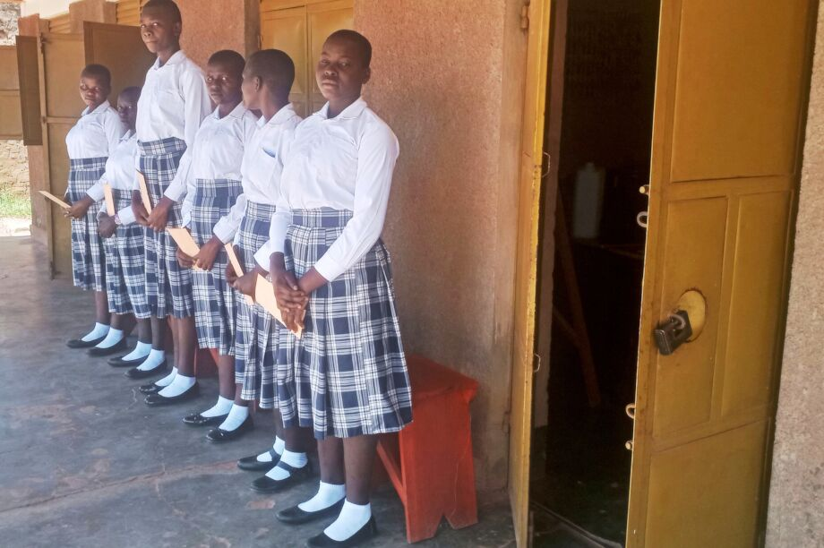
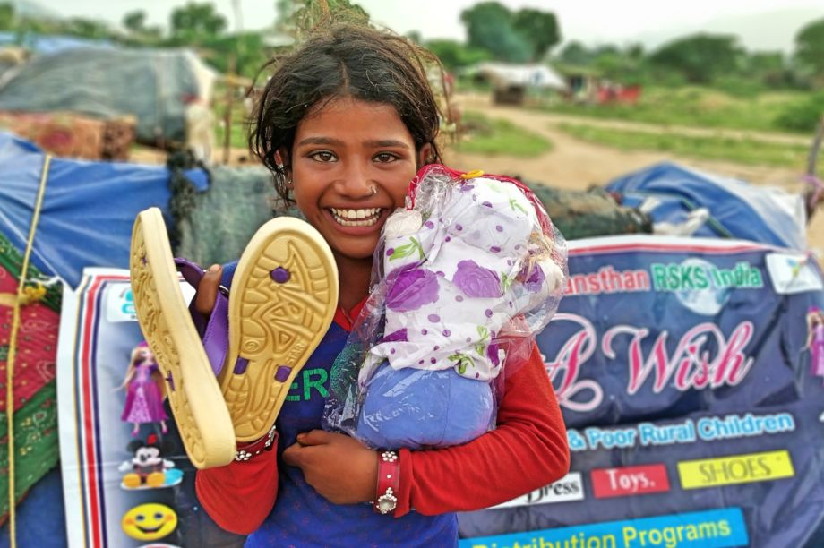
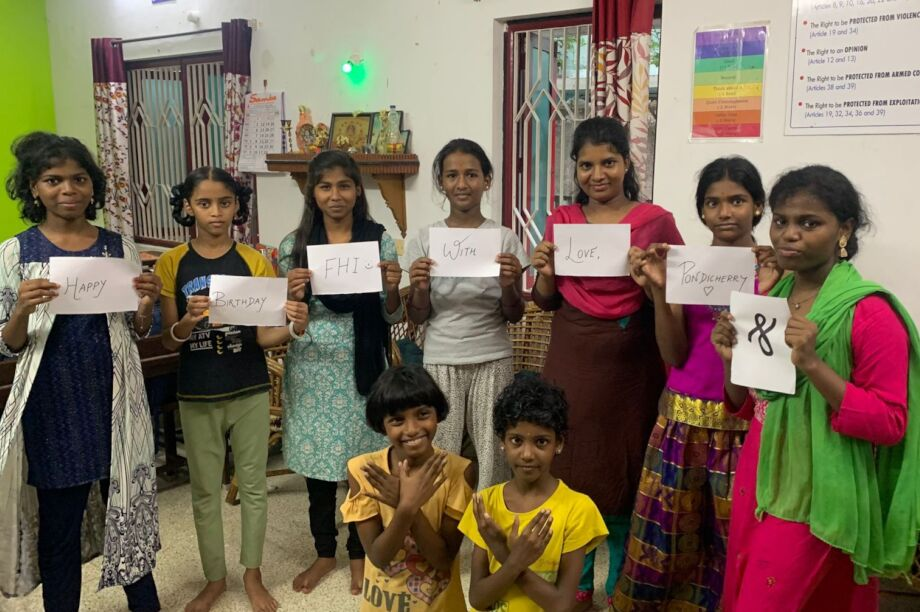

mian content

Summary
Kole Intellectual Forum intends to influence the ideas of policy makers at all levels,
educationists, community and youth in Uganda to include the course unit of Home Economics
in the syllabus of basic education with the intention to promote quality, sustainable,
and potential education by building an Institute of Home Economics at Kole District,
Northern Uganda.
Challenge
With the development of basic education curriculum in Uganda with inadequate knowledge
of course unit of Home Economics since the introduction of formal education in 1886;
promotion of quality and potential education that is sustainable has become a milestone
among girls in particular; because almost all the homes of both the elites and
illiterates have become equally uneconomically viable.
Summary
Under this project, 700 street & poor slum children will be given
Nutrition food, Gift, New Dress, Lunch/Dinner, Toys & Happiness.
The Program will be quite unique. For poor street & slum children
all this is a dream. But will it be possible. A meal & gifts for 700
poor children life will become a golden memory.
Challenge
The future of poor children in India living along the street is in darkness.
Due to a lack of education these children have stolen loot, have addictions,
have gone the way of crime. Because alienating get them from all over the place.
These children need love, happiness, counselling and guidance.


Summary
Our work is exploding and we need to move our current premises.
A farm will enable us to such as a farm will provide the venue,
space, office and training space we require to continue our services
to the children of Limpopo Province. Purchasing a farm is sound financial
investment rather than ongoing renting. Through purchasing a farm we will
also be able to generate a steady income for the organization and that means
greater sustainability long term and more able to cope with donor delays.
Challenge
The problem is the need for our services has increased significantly.
We are now seeing over 2,743 children on a weekly basis.
To be in a position to provide ongoing services and generate
ongoing revenue, we have identified purchasing a farm will enable
us to have ongoing camp programing, sufficient office, and storage space,
training, providing food through a camp kitchen, and having an office space.
The option is to rent a property at approximately the same cost as a mortgage monthly.